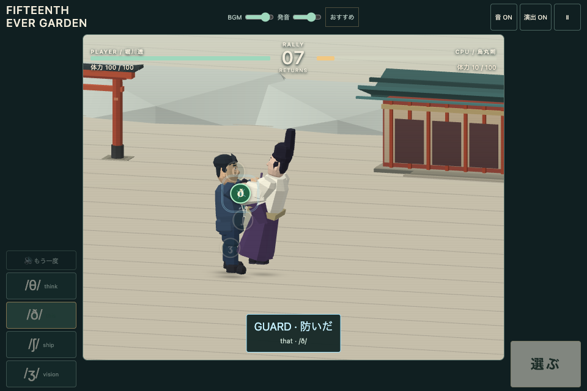
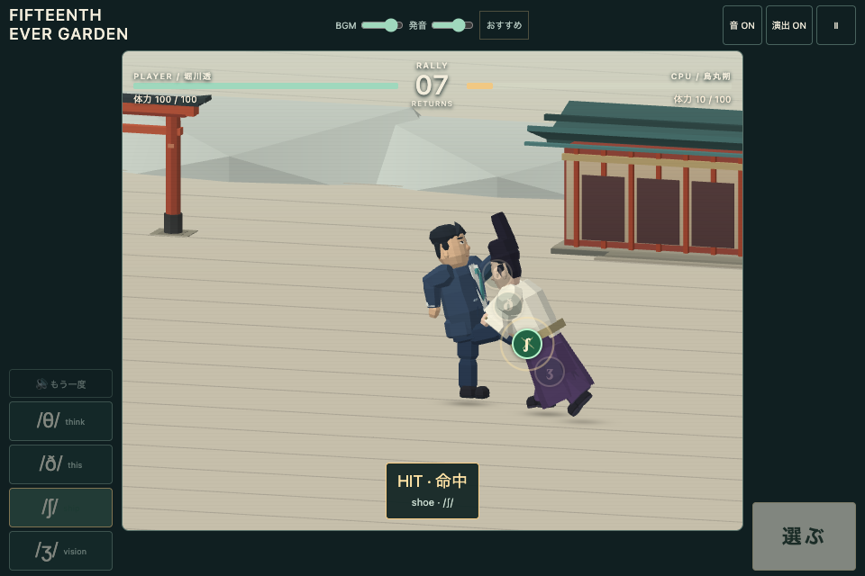
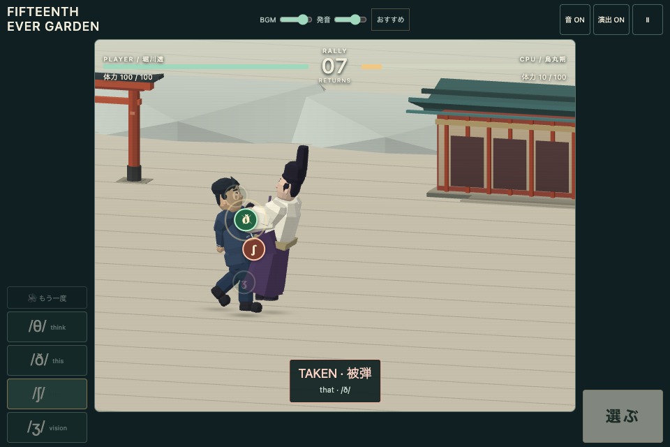
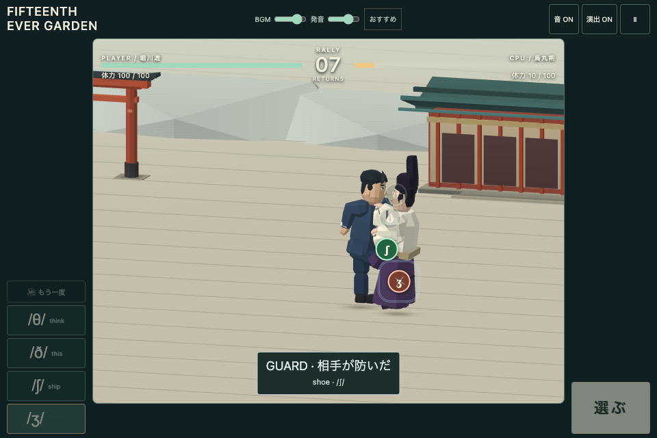

FIFTEENTH EVER GARDEN — v0.37.5
通常ラリーを鼓の拍と蹴りの琴・笛へ。成功を重ねると音域が上がります。ラッシュの伴奏は維持。音量欄の「おすすめ」でBGM 82・発音 72にできます。
旧音声で一試合 同梱音声で一試合
v0.37.6として公開済み。iPhone／iPadの実音は未確認です。旧音声でOSが音量を抑える度合いは、この録音では確認できません。
伴奏・蹴り音の比較（約15秒）
同じ蹴り順・同じ音量。9回の返球のあと、終盤にラッシュ。音楽と効果音だけの実Web Audio出力です。単語音声とスピーカーの音は含みません。
TIME・近接・敗北の前後比較
左が変更前、右が変更後。飛行の続きから着地・転がりへ、接触で結果を表示し、敗北時は膝を落とします。無音・等速。
近接の四つの結果

GUARD · 防いだ — 自分が防御成功
HIT · 命中 — 自分の攻撃が通る
TAKEN · 被弾 — 自分が防御に失敗
GUARD · 相手が防いだ — 相手が防御成功実際の進行
近接に競り勝つ → 溜め → Vocabulary Rush → 決着近接で被弾・相手に防がれる → 押し戻されてラリー再開
Mac Chrome／Apple M4の通常フレームで録画。入力は検証用ドライバー、発音は模擬、動画は無音です。手動で遊んだ楽しさ、iPhone／iPadの操作感・音声の認識しやすさは確認をお願いします。
検証結果と未確認範囲 · 伴奏録音の測定条件